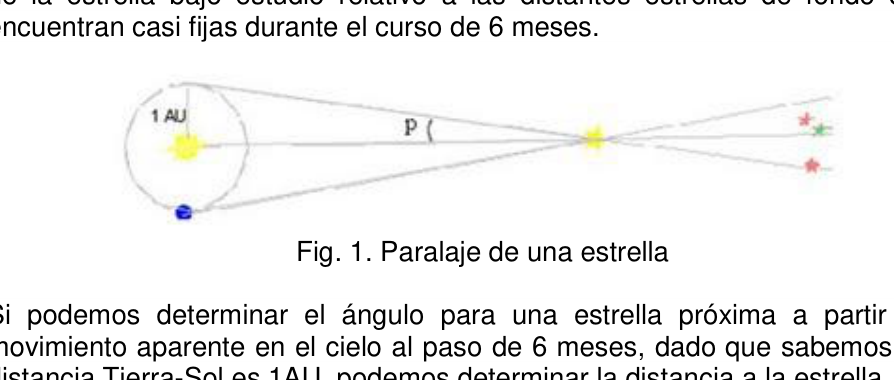
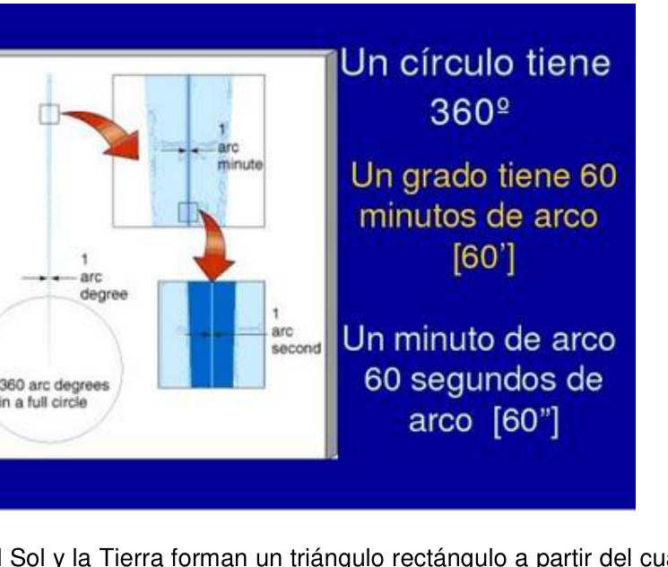
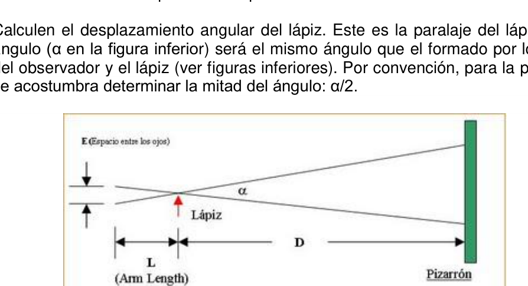
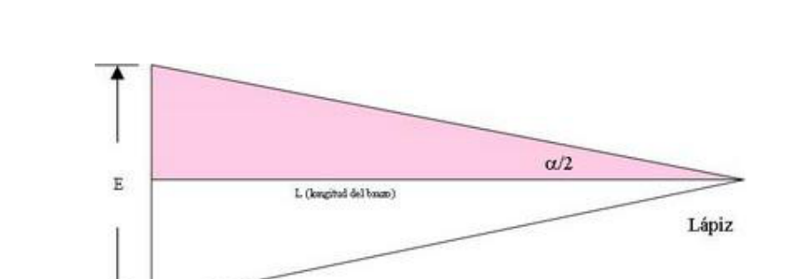
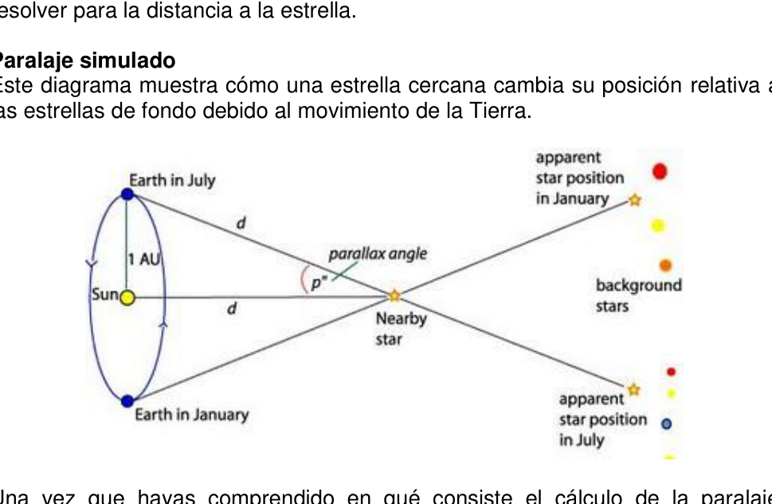

Paralaje (medicion de distancias)
PE4. EET Nro. 1 Cnel M. A. Prado San Pedro, Jujuy.
Paralaje Propósito: Que los estudiantes “exploren” el concepto de PARALAJE, una técnica fundamental para la medición de distancias estelares.
Materiales: Cinta métrica
OAF 2013 - 120 Antecedentes y Teoría: Uno de los problemas más difíciles en la Astronomía es la determinación de distancias a objetos celestes. Existen cuatro métodos básicos de determinación de distancias: radar, paralaje, estándares lumínicos y la ley de Hubble. Cada uno de estos métodos es más útil a ciertas distancias: mientras que el radar es útil para los objetos más cercanos (por ejemplo, la Luna), la ley de Hubble es útil a escalas de distancia mayores. En este ejercicio, investigaremos el uso de la paralaje para determinar distancias. Aunque sean observadas con los telescopios más grandes, las estrellas siguen siendo puntos de luz. A pesar de que podamos decir mucho acerca de una estrella a través de su luz, estas observaciones no nos brindan una escala de referencia que podamos utilizar para determinar su distancia. Para ello, necesitamos hacer uso de un método con el cual ya te encuentras familiarizado: paralaje. Paralaje es un método puramente geométrico que depende de la distancia a la estrella, el tamaño de la órbita de la Tierra y la medición precisa del movimiento de la estrella bajo estudio relativo a las distantes estrellas de fondo que se encuentran casi fijas durante el curso de 6 meses.
Fig. 1. Paralaje de una estrella
Si podemos determinar el ángulo para una estrella próxima a partir de su movimiento aparente en el cielo al paso de 6 meses, dado que sabemos que la distancia Tierra-Sol es 1AU, podemos determinar la distancia a la estrella. Definición: El ángulo p subtendido por la distancia Tierra-Sol (1 AU) es de 1 segundo de arco (=1°/3600) si la distancia al objeto es de 1 parsec.
La estrella, el Sol y la Tierra forman un triángulo rectángulo a partir del cual, si el ángulo p y el cateto opuesto es conocido, el cateto adyacente puede ser calculado. Por trigonometría, tenemos:
OAF 2013 - 121
Si p=1°/3600, entonces d = ___________ AU = 1 parsec = 3.26 años luz. El grupo estelar más cercano se encuentra a una distancia mayor que 1 parsec, lo que quiere decir que todas las estrellas tienen paralajes menores que 1 segundo de arco.
Paralaje en el aula
Una buena forma de ilustrar el cálculo de distancias paralácticas es utilizando un
objeto sostenido con el brazo extendido directamente al frente de nuestros ojos.
Para esta actividad, sostendrás un lápiz o un bolígrafo con tu brazo extendido y
medirás la paralaje del objeto.
- Un miembro del grupo se colocará a una distancia de aproximadamente 15 pies del pizarrón o de alguna pared.
- Ese miembro del grupo sostendrá un lápiz verticalmente con su brazo extendido.
- Otro miembro del grupo medirá la distancia desde el lápiz hasta la frente, teniendo cuidado de resguardar sus ojos. L = ___ cm.
- Quien sostiene el lápiz se cubrirá un ojo y pedirá a otro miembro del grupo que trace una línea vertical en el pizarrón que esté alineada en correspondencia con el lápiz.
- Ahora se cubrirá el otro ojo y pedirá que marquen una segunda línea vertical. Podremos percibir que el lápiz parece cambiar de posición relativa al pizarrón debido a que estamos cambiando el punto de observación de un ojo al otro.
- Cuidadosamente, midan la distancia ojo-ojo. E = ___ cm
- Cada miembro del grupo sostendrá el lápiz, alineará su ojo derecho con la marca de la izquierda en el pizarrón y repetirá el mismo procedimiento con el otro ojo. ¿Se alinea el lápiz con la marca de la derecha en el pizarrón? Explica.
Calculen el desplazamiento angular del lápiz. Este es la paralaje del lápiz. Ese ángulo (α en la figura inferior) será el mismo ángulo que el formado por los ojos del observador y el lápiz (ver figuras inferiores). Por convención, para la paralaje se acostumbra determinar la mitad del ángulo: α/2.
Fig. 2. Vista superior ejerc. “Paralaje en el AULA”.
OAF 2013 - 122
Fig. 3. Vista amplificada una región de fig. anterior.
Para el triángulo sombreado, tenemos:
Utilizando esta fórmula y tus medidas de E (espaciamiento entre los ojos) y L (longitud del brazo), calcula el ángulo paraláctico α/2 (la mitad del ángulo subtendido por los ojos o por las marcas). tan(α/2) = ___ ------> α/2 = ___ degrees.
Si conocemos este ángulo y la distancia de ojo a ojo E pero no la longitud del brazo, podemos calcular la distancia del ojo al lápiz L utilizando la fórmula anterior. Para estrellas reales en lugar de lápices, si conocemos la distancia entre lugares en la órbita de la Tierra y el ángulo que una estrella describe relativo a las estrellas distantes, entonces utilizamos la fórmula obtenida previamente para calcular la distancia a la estrella. Conocemos el espacio angular de las estrellas distantes debido a su RA y DEC. Si percibimos movimiento de las estrellas cercanas relativo a las estrellas distantes durante un periodo de 6 meses, podemos determinar la distancia angular que se desplaza una estrella cercana. Entonces tenemos el ángulo, y conocemos un lado del triángulo (distancia Tierra-Sol), de modo que podemos resolver para la distancia a la estrella.
Paralaje simulado Este diagrama muestra cómo una estrella cercana cambia su posición relativa a las estrellas de fondo debido al movimiento de la Tierra.
Una vez que hayas comprendido en qué consiste el cálculo de la paralaje estelar, visita el siguiente sitio: http://highered.mcgrawhill.com/olcweb/cgi/pluginpop.cgi?it=swf::800::600::/sites/d l/free/007299181x/78778/Parallax_Nav.swf::Stellar%20Parallax%20Interactive
OAF 2013 - 123
- Familiarízate con la animación.
- La línea de visión de la Tierra a la estrella cercana cambia con relación a las estrellas más distantes. Esto es, las estrellas cercanas parecen moverse con relación a las estrellas más distantes que no muestrean movimiento aparente perceptible. Como sabemos la separación angular entre las estrellas distantes, podemos medir el movimiento angular aparente de las estrellas cercanas. Este es la paralaje de la estrella. Intenta describir con tus palabras el movimiento que percibirías como observador desde la estrella y desde la Tierra.
- Describe lo que ocurriría si la estrella se alejara del Sol lo más lejos posible ¿cómo cambia el movimiento visto desde la Tierra?
- En el cálculo de la paralaje realizado en el AULA, utilizamos nuestros ojos para cambiar la posición de visión. ¿Qué cambios ocurrirán en nuestra posición de visión en el caso de observaciones de la paralaje estelar?
- Imagina ahora que la estrella se encuentra lo más cerca del Sol posible. Describe cómo es la paralaje que podría medirse en relación con la que se obtendría en 3.
Contesta las siguientes preguntas (no olvides hacer evidente la fuente de información):
- ¿A qué estrella se le ha determinado el mayor ángulo paraláctico?
- ¿Cuál es el límite para la determinación de distancias utilizando esta técnica?
- ¿Podríamos obtener mejores resultados utilizando la técnica de la paralaje desde Marte?





Topic: Astrophysics Metodi: Small-Angle Approximation, Order-of-Magnitude Estimation, Experimental Data Analysis Competenze: Physical Reasoning, Experimental Data Analysis Objects: Star Fonte: Testo (PDF) — p.3
Parallaggio (misura di distanze)
PE4. EET Nro. 1 Cnel M. A. Prado San Pietro, Jujuy.
Parallellamento Scopo: che gli studenti esplorino il concetto di PARALAGE, una tecnica fondamentale per la misurazione delle distanze stellari.
Materiali: nastro metrico
OAF 2013 - 120 Background and Theory: Uno dei problemi più difficili in astronomia è la determinazione delle distanze da oggetti celesti. Ci sono quattro metodi. I principi di base di determinazione delle distanze: radar, parallaggio, standard luminosi e La legge di Hubble. Ciascuno di questi metodi è più utile a certe distanze: mentre il radar è utile per gli oggetti più vicini (ad esempio, la Luna), la legge di Hubble è utile su scale di distanza più grandi. In questo esercizio,
- Cercheremo . el uso de la Parallaggio per determinare distanze. Anche se sono osservate con i più grandi telescopi, le stelle continuano a che sono punti di luce. Anche se possiamo dire molto di una Una stella attraverso la sua luce, queste osservazioni non ci danno una scala di Un riferimento che possiamo usare per determinare la sua distanza. Per questo, Dobbiamo usare un metodo che lei è già familiare: Parallaggio. Il parallelo è un metodo puramente geometrico che dipende dalla distanza alla la dimensione dell’orbita terrestre e la misurazione precisa del movimento. La luce che viene osservata nella luce è la luce che viene osservata nella luce. si trovano quasi fissi nel corso dei sei mesi.
Fig. 1. Parallelamento di una stella
Se possiamo determinare l’angolo di una stella vicina a partire dal suo movimento apparente nel cielo dopo sei mesi, dato che sappiamo che la La distanza Terra-Solo è 1AU, possiamo determinare la distanza dalla stella. Definizione: L’angolo p sottoscritto per la distanza Terra-Sol (1 AU) è di 1 secondo d’arco (=1°/3600) se la distanza dall’oggetto è di 1 parsec.
La stella, il sole e la terra formano un triangolo rettangolo da cui, se il angolo p e il cateto opposto è noto, il cateto adiacente può essere Calcolato. Per trigonometria, abbiamo:
OAF 2013 - 121
Se p=1°/3600, allora d = ___________ AU = 1 parsec = 3,26 anni luce. El Il gruppo stellare più vicino si trova a più di un parsec, il che significa che tutte le stelle hanno parallelità inferiori a 1 secondo. di arco.
Parallellamento in aula Un buon modo per illustrare il calcolo delle distanze parallattiche è utilizzare un oggetto sostenuto con il braccio stretto direttamente davanti ai nostri occhi. Per questa attività, tenete una penna o una penna con il braccio esteso e misurerai la parallaggio dell’oggetto.
- Un membro del gruppo si collocherà a una distanza di circa 15 piedi dal tavolo o da qualche muro.
- Quel membro del gruppo sosterrà una penna verticalmente con il braccio. diffuso.
- Un altro membro del gruppo misurerà la distanza dalla penna alla davanti, guardando attentamente i suoi occhi. L = ___ cm.
- Chi tiene la matita si coprirà un occhio e chiederà a un altro membro del gruppo. gruppo che traccia una linea verticale sullo schedino che è allineato in Corrispondenza con la matita.
- Ora coprirà l’altro occhio e chiederà di segnare una seconda linea. Verticale. Potremmo percepire che il matita sembra cambiare posizione relativa al tavolo perché stiamo cambiando il punto di osservazione da un occhio all’altro.
- Misurate con attenzione la distanza occhio-occhio. E = ___ cm
- Ogni membro del gruppo deve tenere la matita, allineare il proprio occhio destro con il marchio a sinistra sullo schedino e ripetere lo stesso procedura con l’altro occhio. La matita si allinea con il marchio della
- Giusto sul tavolo? Spiega.
Calcolare il spostamento angolare della matita. Questa è la parallaggio della matita. - Quello . L’angolo (α nella figura inferiore) sarà lo stesso angolo che è formato dagli occhi Il punto di riferimento è il punto di riferimento per il quale si deve utilizzare il crollo (vedi figure di seguito). Per convenzione, per il parallaggio. è usato per determinare la metà dell’angolo: α/2.
Fig. 2. Visto superiore esercitare. Parallaggio all’AULA.
OAF 2013 - 122
Fig. 3. Vista amplificata di una regione di fig. precedente.
Per il triangolo oscurato, abbiamo:
Usando questa formula e le tue misure di E (spazio tra gli occhi) e L (lenghezza dell’armo), calcola l’angolo parallattico α/2 (mezza angola sottoscritto dagli occhi o dai segni). il numero di gradi di riferimento è il numero di gradi di riferimento.
Se conosciamo questo angolo e la distanza occhio-occhio E ma non la lunghezza del Il braccio, possiamo calcolare la distanza dell’occhio dalla penna L usando la formula precedente. Per le stelle reali invece di penne, se conosciamo la distanza. tra i luoghi in orbita della Terra e l’angolo che una stella descrive per le stelle distanti, quindi usiamo la formula ottenuta. prima di calcolare la distanza dalla stella. Conosciamo lo spazio angolare delle stelle distanti a causa della loro RA e DEC. Se percepisci il movimento delle stelle vicine rispetto alle stelle Distanti per un periodo di 6 mesi, possiamo determinare la distanza angolare che muove una stella vicina. Quindi abbiamo l’angolo, e Conosciamo un lato del triangolo, quindi possiamo risolvere per la distanza dalla stella.
Simulazione parallela Questo diagramma mostra come una stella vicina cambia la sua posizione relativa a le stelle di fondo a causa del movimento della Terra.
Una volta che hai capito cosa è il calcolo del parallaggio Stellare, visita il sito: http://highered.mcgrawhill.com/olcweb/cgi/pluginpop.cgi?it=swf::800::600::/sites/d L’intera rete di comunicazione è stata creata dal progetto di programmazione di ricerca e sviluppo.
OAF 2013 - 123
- Familiarizzatevi con l’animazione.
- La linea di vista della Terra verso la stella vicina cambia in relazione. alle stelle più lontane. Cioè, le stelle vicine sembrano spostarsi rispetto alle stelle più distanti che non mostrano movimento apparente percepito. Come sappiamo la separazione angolare Tra le stelle distanti, possiamo misurare il movimento angolare. apparente dalle stelle vicine. Questa è la parallazia della stella. Cerca di descrivere con le tue parole il movimento che percepiresti come osservatore dalla stella e dalla terra.
- Descrive cosa accadrebbe se la stella si allontanarebbe dal Sole . possibile come cambia il movimento visto dalla Terra?
- Nel calcolo del parallaggio effettuato nell’AULA, abbiamo usato i nostri occhi per cambiare posizione visiva. Quali cambiamenti avverranno? La nostra posizione visiva nel caso di osservazioni di parallaggio
- La stella?
- Immaginate ora che la stella si trovi il più vicino possibile al Sole. Descrive come sia il parallaggio che potrebbe essere misurato rispetto a quello che E’ il numero di tre.
Rispondi alle seguenti domande (non dimenticare di indicare la fonte di informazioni:
- A quale stella è stato determinato l’angolo parallattico più grande?
- Qual è il limite per determinare le distanze utilizzando questa tecnica?
- Potremmo ottenere risultati migliori usando la tecnica della Parallaggio da Marte?
Topic: Astrophysics Metodi: Small-Angle Approximation, Order-of-Magnitude Estimation, Experimental Data Analysis Competenze: Physical Reasoning, Experimental Data Analysis Objects: Star Fonte: Testo (PDF) — p.3
The following information shall be provided:
PE4. The EET number. 1 Cnel M. A. Prado . St. Peter, Jujuy.
Parallels Purpose: To enable students to explore the concept of PARALAJE, a The method is fundamental for measuring stellar distances.
The following is a list of the products used:
The following points shall be added: Background and theory: One of the most difficult problems in astronomy is the determination of distances to celestial objects. There are four methods The following are the basic principles for determining distances: radar, parallax, lighting standards and The law of Hubble. Each of these methods is most useful at certain distances: While radar is useful for nearest objects (e.g. the Moon), Hubble’s law is useful at larger distance scales. In this exercise, We ‘ll investigate . el use de la Parallax for determining distance. Even if they’re observed with the biggest telescopes, the stars still remain. They’re being points of light. Although we can say a lot about a star through its light, these observations do not give us a scale of reference that we can use to determine its distance. For that, We need to use a method you’re already familiar with: Parallax. Parallelism is a purely geometric method that depends on the distance to the star, the size of the Earth’s orbit and precise measurement of motion The study of the star in question relates to the distant background stars that are They find almost fixed during the course of 6 months.
Fig. 1. Parallels of a star
If we can determine the angle for a nearby star from its apparent movement in the sky over the course of 6 months, since we know that the Earth-Sun distance is 1AU, we can determine the distance to the star. Definition: The angle p subtended by the Earth-Sun distance (1 AU) is 1 arc second (=1°/3600) if the distance to the object is 1 parsec.
The star, the sun and the earth form a rectangular triangle from which, if the angle p and the opposite cathetus is known, the adjacent cathetus may be Calculated. By trigonometry, we have:
The following is the list of the Member States’ financial statements:
If p=1°/3600, then d = ___________ AU = 1 parsec = 3.26 light years. El The nearest star group is more than 1 parsec away, the Which means all stars have parallaxes less than 1 second. of a bow.
Paralleling in the classroom A good way to illustrate the calculation of paractic distances is to use a object held with the arm stretched directly in front of our eyes. For this activity, you will hold a pencil or pen with your arm outstretched and You’ll measure the object’s parallax.
- A group member shall be placed at a distance of approximately 15 feet off the board or some wall.
- That group member will hold a pencil vertically with his arm . extended.
- Another member of the group will measure the distance from the pencil to the front, taking care to guard your eyes. L = ___ cm.
- Whoever holds the pencil will cover one eye and ask another member of the family. group that draws a vertical line on the board that is aligned at correspondence with the pencil.
- Now he ‘ll cover the other eye and ask you to mark a second line . vertical. We can sense that the pencil seems to change position. Relative to the board because we ‘re changing the point of observation from one eye to the other.
- Carefully measure the eye-to-eye distance. E = ___ cm
- Each member of the group will hold the pencil, align his right eye with The left mark on the dashboard and repeat the same procedure with the other eye. Does the pencil align with the mark of the Right on the board? - Explain that.
Calculate the angular displacement of the pencil. This is the pencil parallax. That one . angle (α in the figure below) will be the same angle as the angle formed by the eyes The observer and the pencil (see figures below). By convention, for parallax. The angle half is usually determined: α/2.
Fig. 2. Upper eye exercise. Parallel at the AULA.
The following is the list of the countries of the European Union:
Fig. 3. Amplified view of a fig region. previously.
For the shaded triangle, we have:
Using this formula and your measurements of E (eye spacing) and L (arm length) calculates the parabolic angle α/2 (half the angle Substantiated by the eyes or marks). The value of the input data is the sum of the values of the input data.
If we know this angle and the eye-to-eye distance E but not the length of the So, we can calculate the distance from the eye to the L pencil using the formula previously. For real stars instead of pencils, if we know the distance between places in Earth orbit and the angle a star describes. Relative to the distant stars, then we use the formula obtained. to calculate the distance to the star. We know the angular space of distant stars because of their RA and DEC. If we perceive the motion of nearby stars relative to the stars Distance over a period of 6 months, we can determine the distance angular movement of a nearby star. So we have the angle, and We know one side of the triangle, so we can resolve for distance to the star.
Simulated parallel This diagram shows how a nearby star changes its relative position to The background stars because of the Earth’s motion.
Once you understand what the calculation of the parallax is about Star, visit the following site: The Commission has also adopted a number of measures to ensure that the Commission is able to implement the measures in the light of the information provided by the Member States. The Commission has decided to extend the period of validity of the agreement to the Member States.
The following is the list of the countries of the European Union:
- Get familiar with the animation.
- The line of sight from Earth to the nearest star changes relative to to the most distant stars. I mean, the nearby stars look like Moving relative to the most distant stars that do not show The motion is apparently perceptible. How do we know the angular separation? Between the distant stars, we can measure angular motion. apparent from nearby stars. This is the star’s parallax. Try to describe in your own words the movement you would perceive as Observer from the star and from the earth.
- Describe what would happen if the star were to move as far away from the Sun as possible . How does the motion seen from Earth change?
- In the calculation of the parallax made at AULA, we used our eyes to change the position of vision. What changes will occur in Our position of vision in the case of parallax observations The star?
- Now imagine that the star is as close to the Sun as possible. Describe how the parallax could be measured relative to the You’d get it in 3.
Answer the following questions (please make clear the source of the The following information:
- Which star has the highest parallax angle?
- What is the limit for determining distances using this What about the technique?
- Could we get better results using the technique of Parallax from Mars?
Topic: Astrophysics Metodi: Small-Angle Approximation, Order-of-Magnitude Estimation, Experimental Data Analysis Competenze: Physical Reasoning, Experimental Data Analysis Objects: Star Fonte: Testo (PDF) — p.3